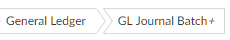

To copy a standard function:
- Go to Function Maintenance.
-
- Click
 .
. - Replace the % in the function code with +.
- Click

If you want to make changes to a standard function (one with a code that begins %), you can make a copy of the function (with a code that begins +). Whenever a user selects the standard function, the corresponding "+" copy will be run instead.
You can also copy standard pages, reports and menus in the same way. So if you make a "+" copy of a standard page and change it (for example to add a field), when a user selects the standard function that calls the page,
NOTE
Do not change standard (%) functions, pages or reports.
NOTE
If any element on a
The 'plus' version could be a function, tab, menu, page, form, etc.
.